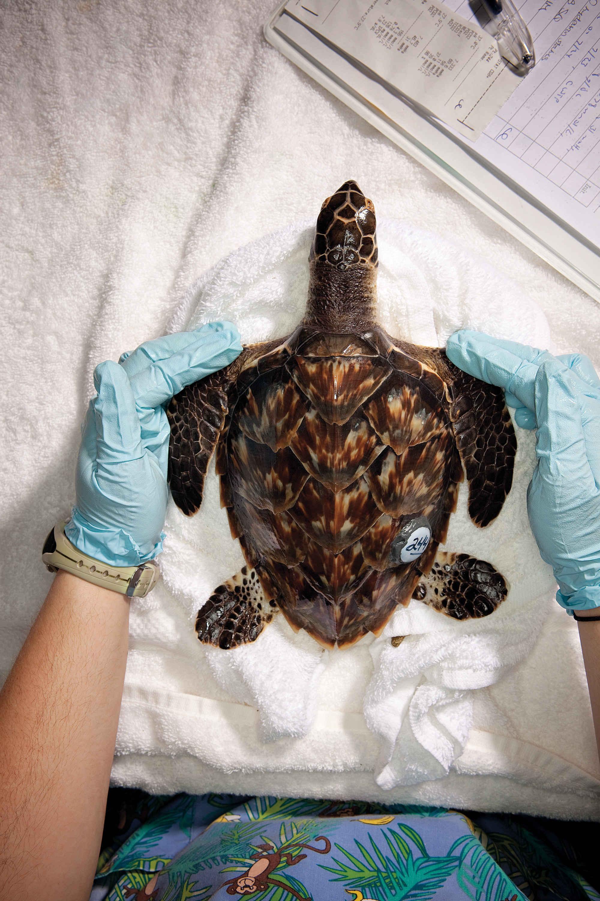
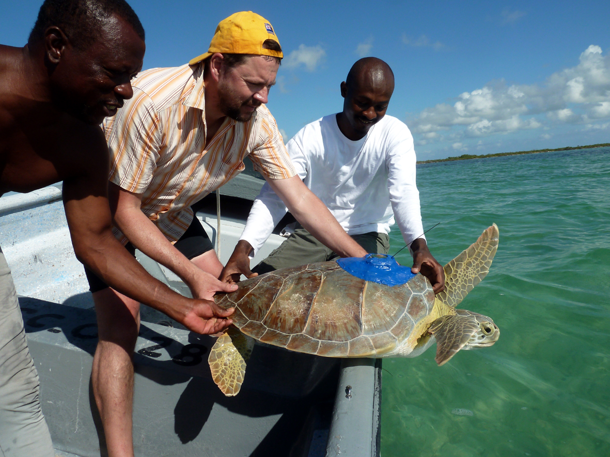
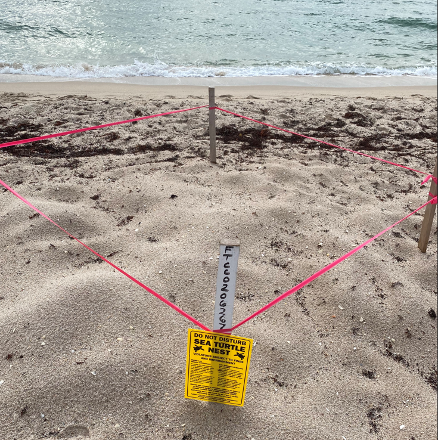

Far away along the coasts of Yucatan and Florida, our initiatve began after seeing baby turtles crawling for the first time in their lives into the ocean. We wanted to devote our life to make a contribution no matter how big or small to the endangered marine wildlife around us.



Eggs are largely collected by volunteers so that they may be hatched in Tortugranja to give them the best opportunity for survival, free from predators and clumsy tourists.
Turtles are carefully monitored and measured by expierenced scientists in the field.
Tourist tours and volunteers raise money for the local economy which benefit the marine ecosystems.
President
Student who leads conservation efforts, oversees projects, and advocates for the protection of marine turtles and their habitats.
Founder
Passionate student who brings volunteers, scientists, and passionate students to underprivledged areas to save marine turtles.
Volunteer Coordinater
Primary volunteer coordinator in the Yucatan Peninsula, bringing thousands of people to make contributions and work in the field.